September Papers: The L in ML Stands for LLMs
For September, the research team reviewed a whopping 22 papers! Needless to say, competition was fierce, and only four made the final cut for this month’s edition, which is LLM-themed:
- FlowRL uses GFlowNets to train LLMs on full reward distributions, promoting diverse reasoning paths instead of just reward maximization.
- Soft Tokens, Hard Truths proposes using continuous “soft” tokens with injected noise to enable reinforcement learning fine-tuning of LLM reasoning.
- Set Block Decoding accelerates LLM inference by generating multiple tokens in parallel using non-causal attention and iterative entropy-based sampling.
- Metacognitive Reuse enables LLMs to extract and reuse concise reasoning “behaviors” to improve efficiency and reduce repeated computation.
We hope you enjoy this month's papers as much as we did! If you have thoughts or questions, please reach out to us at @GCResearchTeam.
FlowRL: Matching Reward Distributions for LLM Reasoning
The key idea
Reinforcement learning (RL) has become the dominant paradigm for fine-tuning LLMs to give them 'reasoning capabilities'. Recent reasoning models adopt reward-maximising methods (eg, PPO, GRPO or one of the many variants). These can over-optimise dominant reward signals, potentially neglecting less frequent but equally valid reasoning paths, thus reducing diversity.
FlowRL uses the framework of GFlowNets (2023) to transform scalar rewards into a target distribution, using a learnable partition function, and minimises the (reverse) KL divergence between the policy and target distribution. More diverse generation is observed, with improved scores on certain benchmarks.
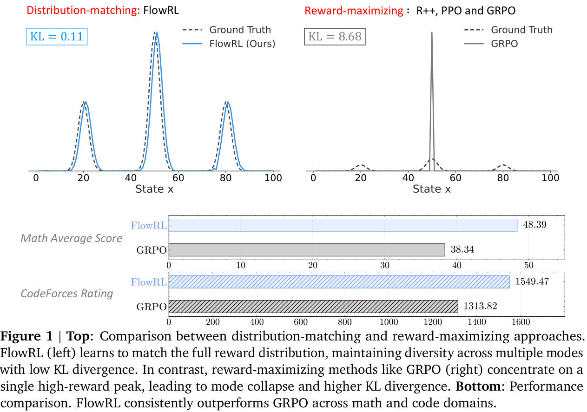
NB. It is worth pointing out that GFlowNets have been used in LLM fine-tuning in the past. Particularly, Flow of Reasoning (2025) formulates multi-step LLM reasoning as a Markovian flow on a directed acyclic graph (DAG).
Background
RL plays a crucial role in post-training of LLMs. Training algorithms have progressed through several key stages: from REINFORCE (1999), through TRPO (2015) and PPO (2017), to GRPO (2024) and its variants. These all aim to maximise reward signals, potentially leading to model collapse. One of the key aspects of TRPO was to introduce a KL penalty to prevent this collapse. More recent adaptations include adjusting the clip ratio (DAPO, 2025) or resetting the reference model (ProRL, 2025), all with the objective of increasing diversity.
The paper uses the machinery of generative flow networks (GFlowNets) introduced by Bengio et al (2023). The following brief description is taken from §2. GFlowNets are a probabilistic framework for training stochastic policies to sample discrete, compositional objects (eg, graphs or sequences) in proportion to a given reward. The core principle (see Figure 2) is to balance forward and backward probability flows at each state, inspired by flow matching (Bengio et al, 2021).
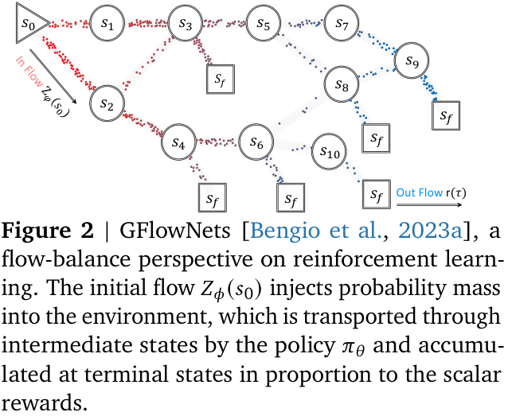
Their method
The paper introduces FlowRL, a policy optimisation algorithm designed to align the policy model with the full reward distribution encouraging mode coverage—rather than reward maximisation which tries to find the 'best' local mode. The core idea is to introduce a learnable partition function that converts scalar rewards into a target distribution; the objective is to then minimise the (reverse) KL divergence between the policy and this.
This KL objective is based on the trajectory balance formulation from GFlowNets. Prior work on GFlowNets typically operated on short trajectories in small discrete spaces. To address challenges of long CoT (chain-of-thought) training, two key techniques are adjusted:
- length normalisation to tackle gradient explosion in variable-length CoT reasoning;
- importance sampling to correct for distribution mismatch between generated rollouts and the current policy.
Both these arise frequently in other LLM post-training contexts but need to be adjusted to the GFlowNets set-up.
Results
FlowRL is compared with 'vanilla' RL algorithms: REINFORCE++ (2025/01), PPO (2017/07) and GRPO (2024/12). The benchmarks are across maths and code domains, using both base and distilled LLMs of reasonable size: 32B and 7B, respectively. Consistent performance improvements are observed (see note below), as well as (perhaps, more importantly) increased diversity of generated reasoning paths—although, metrics on such are less precisely defined.
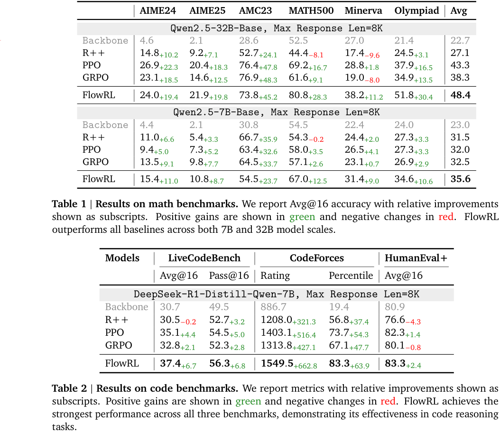
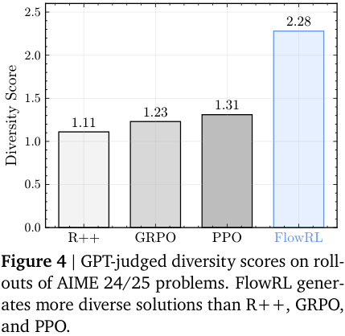
NB. It must be pointed out that none of the more modern variants, such as DAPO (2025/03), ProRL (2025/05) or GSPO/GMPO (2025/07/2025/07) are compared. Many of these explicitly address lack of diversity. Little can be inferred regarding, say, FlowRL vs DAPO or ProRL.
Takeaways
The paper introduces a new framework for LLM reasoning, and benchmarks it vs some modern, albeit vanilla, RL algorithms.
-
Positives.
- Mainstream LLM reasoning approaches are (highly?) unsatisfying, particularly the lack of diversity.
- The paper effectively proposes an alternative paradigm, using GFlowNets as a tool, and the diversity certainly improves, significantly in some cases.
-
Negatives.
- The lack of discussion on the other recent (earlier) paper using GFlowNets (FoR, 2024) is disappointing from an academic standing.
- The lack of comparison with state-of-the-art RL training algorithms prohibits any real conclusion on whether GFlowNets are a better way to go than reward-maximisation.
-
Conclusion.
- Despite its shortcomings, this reviewer finds the paper very interesting, and could definitely serve as a foundation for further research.
- Replication studies, with better benchmarks, are highly encouraged.
Metacognitive Reuse: Turning Recurring LLM Reasoning Into Concise Behaviors
The key idea
"Do not rediscover the wheel, if you have already done it once!"
-- paraphrased TL;DR
According to Didolkar et al., this is the key lesson we should teach LLMs. Why? The authors have observed that while rapid progress in the performance of Chain-of-Thought approaches has been made, this has also led to an effectiveness/efficiency decline. From where? Because the LLMs re-derive knowledge from scratch too often, resulting in less room for exploration and larger token output.
The proposed remedy is metacognitive reuse. Instead of providing a set of facts/rules, we let the LLMs synthesise their own behaviours. These are concise pieces of knowledge, reusable across questions/datasets and models.
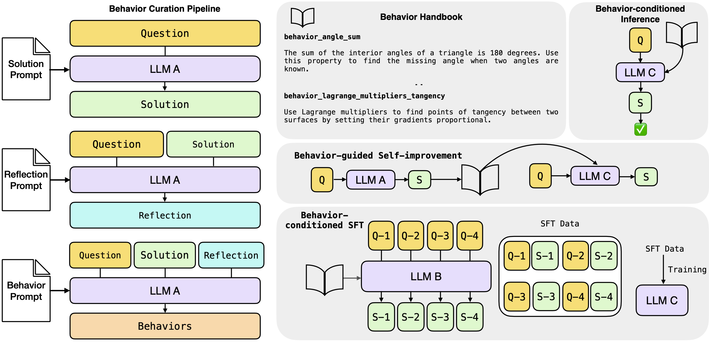
Behaviour Curation Pipeline (left): All the 3 stages of behaviour curation pipeline: solution, reflection, extraction. LLM A is referred to as the Metacognitive Strategist. Reasoning with behaviours (right; in gray): The three proposed ways to utilise behaviours -- inference, self-improvement and supervised fine-tuning (SFT). LLM B and LLM C are a student and teacher LLMs respectively.
Once synthesised, Didolkar et al. propose three ways to utilise extracted behaviours: * Behaviour-conditioned inference (BCI) -- the set of behaviours is pre-extracted from a (different) strategist LLM. * Behaviour-guided self-improvement -- the set of behaviours is extracted as we process questions/tasks from the same LLM. * Behaviour-conditioned supervised fine-tuning -- a Behaviour-conditioned teacher model synthesises a training set of question/solution pairs, used to fine tune the student model.
Background
Chain-of-Thought (CoT) prompting is a technique in prompt engineering for large language models. It encourages the LLM to break down complex reasoning tasks into a sequence of intermediate reasoning steps (a “chain”) before arriving at a final answer. This helps improve performance on multi-step problems (e.g. arithmetic, logic, commonsense) at the cost of outputting long reasoning traces (more output tokens = higher expenditure). Unfortunately, the chain might still be flawed. More enumerative beam-search-like approaches, can resolve this, but the computation required is even higher.
Their method
Behaviour curation There is a lack of formal definition of behaviour. At the risk of repeating myself, authors define it in the main text as "a reusable skill---concise piece of knowledge---distilled from an LLM's chain of thought" (p.4). E.g.:
behaviors_angle_sum: The sum of the interior angles of a triangle is 180 degrees. Use
this property to find the missing angle when two angles are known.
The proposed extraction pipeline consists of three stages. The Metacognitive Strategist (DeepSeek-R1-Distill-Llama-70B) first generates a reasoning trace + a final answer. These are then used for the reflection prompt, which is also fed back to the same LLM, to allow it to filter out illogical chains and also generate new candidate behaviours. The Metacognitive Strategist is also used for the generation of the final set of behaviours, which are to be appended to the behaviour handbook.
Out of the three prompts, perhaps the most insightful is the reflection prompt. Behaviour is defined there as "a note or skill", which "can be a strategy, a trick, or a technique", or "it can also be a general rule or a commonsense principle", and, most importantly, "is not a solution to the problem, but can be used to solve it". Correctness analysis prompting aside, the authors explicitly require the model to consider how a behaviour "would have helped in reducing the answer length".
Behaviour usage\(\approx\)RAG A naive approach to behaviour conditioned inference (BCI) would be to simply make them part of the context. Such an approach, however, would bloat the number of input tokens and, as a result, have higher cost than CoT. The authors also note this: instead of feeding in all behaviours, for a question \(Q_i\), a subset of behaviours \(B_i\) is retrieved and the solution \(S_i\) is generated based on the \((B_i, Q_i)\) pair. The retrieval function depends on the dataset -- topic-matching is used for MATH, FAISS top-40 cosine similarity lookup for AIME.
When it comes to Behaviour-guided self-improvement, there is some confusion going on inside me. \(\S4.2\) states:
behaviours [...] are then fed back [...] to solve the same question or new questions
and that the implementation "closely follows that of BCI". In the experimental setup (\(\S5.2\)), the text suggests that the approach is a behaviour-guided variant of the Critique-and-Revise baseline and that
[...] reasoning traces are generated per question which are used [...] to curate a behaviour handbook for that question
The inline equation \(((B, Q),\rightarrow R_2)\) (note the lack of subindexes) also suggest that there is no RAG-like lookup as in BCI, nor that the previously curated behaviours are used for the current or future questions. Whether this is indeed the case or is just a clarity issue with the writeup, only the authors can tell. (Open-sourcing the code to reproduce the experiments could also have answered my questions).
As both of the above approaches use extra input tokens, the authors also present Behaviour-conditioned SFT (BC-SFT). The aim of BC-SFT is to "internalise" the set of behaviours in the weights of the model -- when answering any new questions, the fine-tuned model will not be conditioned on a behaviour handbook. It will be invoking those behaviours, based on its parameter weights. Importantly, to achieve that the student model is never conditioned on a handbook, neither during training, nor during inference.
Results
The authors experiment on MATH as well as both AIME (2024, 2025) variants. Behaviour usage (conditioning/self-improvement/SFT) is performed on open-source reasoning LLMs -- DeepSeek-R1, which in the plots is referred to as R1-Llama-70B and Qwen. The Metacognitive Strategist model is always fixed to DeepSeek. For MATH, behaviours are synthesised from a subsample of it and for AIME -- from past iterations (2022, 20223) of the benchmark. In the plots that follow, while no standard deviations are reported (since we measure both accuracy and token usage, stds could look like an ellipse around each point), results are average across 80 seeds -- check paper for further technical details. Unless otherwise stated, the x-axis is the average number of tokens produced per solution and the y-axis is average accuracy. The different symbols are the enforced upper limit on number of output tokens.
N.B. #1 Before we proceed to analyse the plots, please be aware the axis limits vary between plots, sometimes quite drastically (cf. SFT plots). I am aware the authors are trying to make a point, but do not vary limits... at least not within one figure... or at least without being explicit about it.
N.B. #2 For the reader's entertainment, I have tried to be as independent as possible in my analysis, i.e. only copying plots, but not copy-pasting the authors' text.
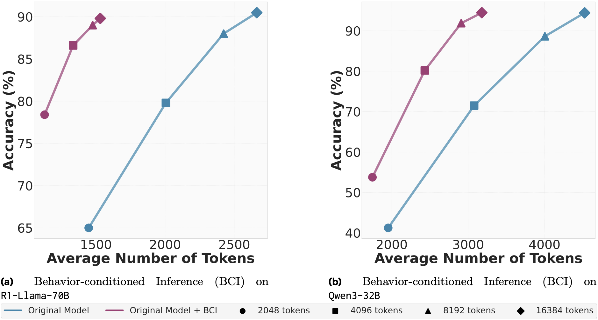
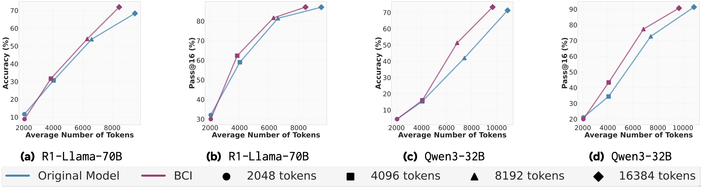
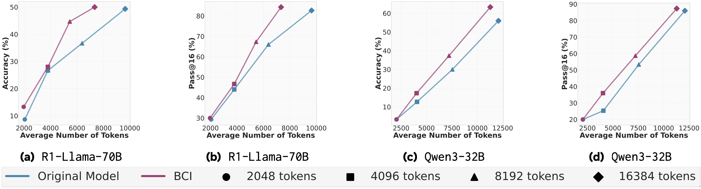
Starting with the BCI performance, there is a clear advantage, both in terms of tokens produced and accuracy on the MATH dataset. This advantage however is much smaller and questionable, without standard deviations, on both AIME variants, especially at lower token limits (2048 and 4096). At higher token limits, we do see more substantial improvements, particularly for BCI with DeepSeek. While concrete numbers would certainly have been appreciated, the reduction in output tokens for DeepSeek seemingly varies between 5% and 30%. Upon visual inspection, such reductions are much rarer for Qwen. In all cases, accuracy is preserved or improved (sometimes slight, sometimes substantial, hard to judge visually).
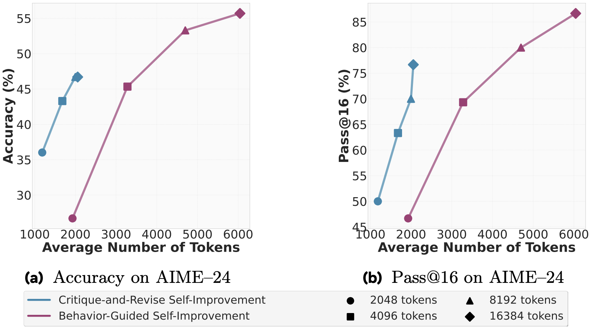
Again, for self-improvement, analysis of results can be split into two parts -- for the 2048 token limit, behaviours hurt more than help as there is both an increase in tokens produced and a drop in accuracy. For larger limits, and especially the largest, behaviour-guided self-improvement can give 10% boost in the accuracy and 20% boost in Pass@16., but at the cost of threefold increase in the output tokens. Also note, that for this result, there is the ambiguity if the behaviour handbook is synthesised for each question individually or for the whole dataset.
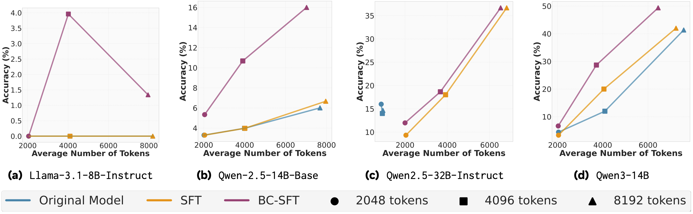
BC-SFT on AIME-24. DeepSeek is the teacher model, each pane is a different student model. Llama-3.1-8B is not DeepSeek!
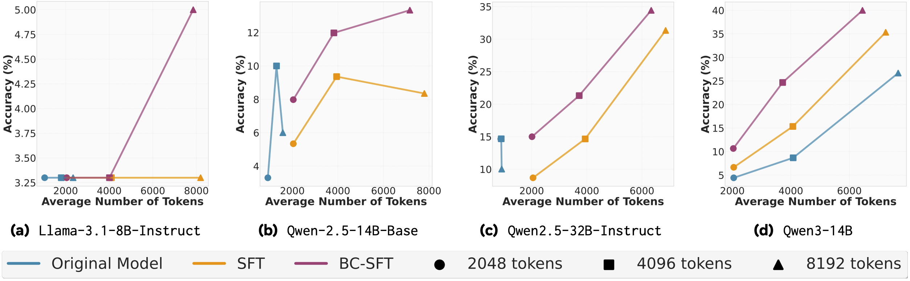
When it comes to supervised fine tuning, the student model has to have a sufficient capacity in order to grok behaviours -- the 8B model's accuracy is limited to 5%. This conclusion is further reinforced from the fact that BC-SFT results for Qwen-2.5 32B and the lowest token limit often match/exceed accuracy of the 14B variant, across all limits. Newer model variants also benefit more from behaviour conditioning, than past iterations of the same architecture (cf. Qwen3 vs Qwen2.5). And while accuracy improvement to the baseline SFT can be threefold (which is actually 10%, note the scale!) and is observed across all token limits, reduction in the token count is still a larger token limit (8192) luxury. A table with concrete token counts is lacking in the paper, but I would estimate the reduction to be 10-15%.
Takeaways
So, what score would the Reviewer #2 inside me give? Despite my initial hopes, I am leaning towards rejection. The idea of metacognitive-reuse seems novel and exciting enough for me, but the experiments execution is a bit flawed. The authors discuss the efficiency implications of having a larger input but: * Never state any end-to-end costs -- even with amortised computation and cheaper rates on input, this is a necessary information (see below). * Never visualise how the behaviour handbook grows or analyse its redundancy -- out of the 1k subsampled MATH questions, the Metacognitive Strategist extracted 785 behaviours (p. 7). For AIME, out of 16\(\times\)60=960 reasoning traces -- 1457 behaviours (p. 7). On average, the model finds a new pattern from almost every given question! In that case, in a real world scenario, will we need to run the Strategist for every question (requires 3 prompts; cache hits unlikely)? * Never compare to other, non-prompting, test-time compute scaling techniques, such as latent reasoning -- if latent reasoning is both cheaper/more accurate, then the above approach is obsolete. I am not certain that this will be the case, but I call for a comparison.
Set Block Decoding is a Language Model Inference Accelerator
The key idea
Set block decoding is a parallel sequence generation algorithm that accelerates token generation by producing multiple tokens simultaneously. The approach requires fine-tuning LLMs to support non-causal generation. Similar to discrete diffusion techniques, a block of \(k\) (e.g. 16) tokens is initialized with special mask <m> tokens. Then through an iterative sampling process requiring at most \(k\) steps, these mask tokens are progressively replaced with generated tokens.
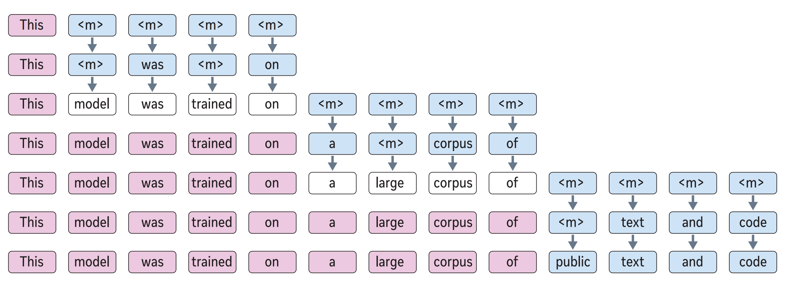
, then 'Background
Traditional autoregressive inference is both compute and more importantly memory bandwidth-intensive. To generate a sequence from an LLM trained to predict the next word, we first prefill the context, passing it through the model to generate the KV cache and first token. Then to generate the next \(N\) tokens from a model of \(P\) densely activated parameters, we must perform \(N\) additional passes through the model, where each pass requires all \(P\) parameters to be transferred from memory to the compute unit, executing at least \(P\) multiply-accumulate operations.
Many techniques aim to improve upon this autoregressive next-word-prediction baseline. These can be split into reducing the work per pass or reducing the number of passes (\(< N\)). This work fits into the second category, which also includes speculative sampling and discrete diffusion.
Their method
The authors train a model to predict independent distributions for future tokens. Given a block of \(k\) tokens at indices \([t, t+k)\), partitioned into two sets: \(\mathcal{M}\) corresponding to indices of unknown tokens and \(\mathcal{J}\) corresponding to indices of known (already-sampled) tokens, model predicts \(p(x_{i \in \mathcal{M}} \mid x_{<t}, x_{\mathcal{J}})\), where \(x\) is the sequence of discrete tokens. Practically, this is achieved by applying a non-causal attention pattern over the \(k\) indices in \(\mathcal{M} \cup \mathcal{J}\) and using special mask tokens <m> at unknown token indices in \(\mathcal{M}\).
Since the model predicts distributions for all unknown future tokens at every step, one must decide which subset to accept (sample) at that step. The authors accept tokens whose predictive distribution has entropy below a threshold \(\gamma\). If no distribution has entropy below \(\gamma\), they accept the single token with the lowest entropy. Thus, larger \(\gamma\) means accepting more tokens per step, which is faster but potentially less accurate.
Therefore, the inference procedure follows (see figure 2b, above):
- Query the model with the current prefix, followed by a non-causal sequence of \(k\) \(\times\)
<m>. - Replace each
<m>token whose predictive distribution \(p(x_{i} \mid \ldots)\) has entropy less than \(\gamma\) with a sample from \(p(x_{i} \mid \ldots)\). - If any
<m>tokens remain, query the model with the current sequence and repeat from (2). Otherwise go to (1).
To support queries of this form at inference time, the authors train the model on a mixture of a next-token prediction loss and masked-token prediction loss, where the masking rate is sampled uniformly in \([0, 1]\) for each sequence.
Results
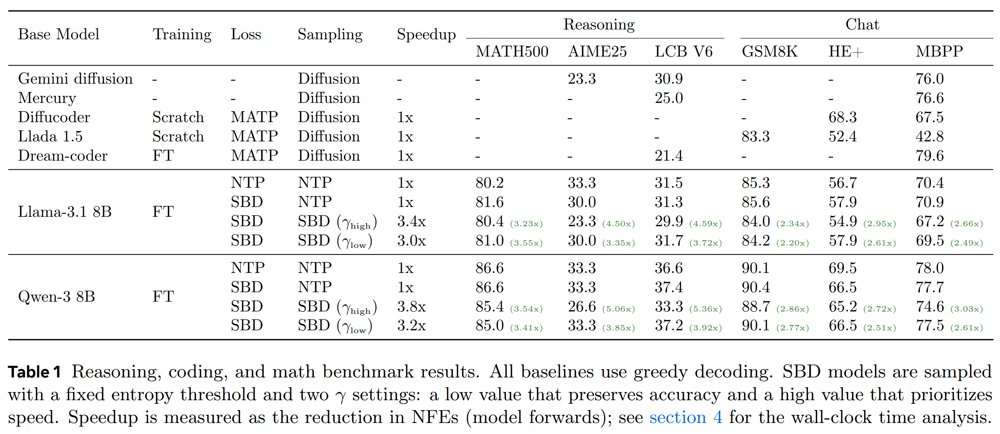
Results shown above, across various reasoning and chat benchmarks, demonstrate a mild accuracy degradation for set block decoding (SBD) versus the next token prediction (NTP) baseline, depending on the task. The speedup for \(\gamma_{\text{high}}\) is larger than \(\gamma_{\text{low}}\), but it typically incurs a larger degradation in task accuracy. Speedup show in this plot corresponds to the reduction in the number of forward passes through the model, which is appropriate proxy for the performance of bandwidth-bound cases such as small-batch generation. This is supplemented by theoretical speedup analysis based on a roofline hardware model, but the paper lacks physical wall-clock speedup benchmarks.
Takeaways
One possible concern is that the model may generate intermediate samples that look like PREFIX <m> <m> TOKEN, i.e. where there are two as-yet-unchosen tokens between the known PREFIX and sampled TOKEN. After committing to this, the sampling procedure cannot later decide to insert just one token—it can only progress by performing an unmask-and-sample action on the sequence, never by insert or delete. Discrete diffusion approaches such as seed diffusion often have such capabilities. The ability to insert & delete mean that the model does not have to commit to tokens appearing in precise relative positions, independent of the intervening tokens: an idea that seems hard to justify in the context of language modelling.
Altogether, this is a promising technique for mitigating the autoregressive sequence generation bottleneck, as it is able to generate multiple tokens with a single forward pass through the model, doing so in a reasonably flexible manner thanks to the entropy heuristic. I'd be interested to see further evolutions of this and related methods.
Soft Tokens, Hard Truths
The key idea
Over the course of the last year, a number of works have investigated "latent reasoning", in which reasoning tokens are represented in some continuous latent space, rather than a specific token in the language vocabulary. Many of these works require implementation schemes that are difficult to scale (such as Coconut) or are training-free (such as Soft Thinking and Mixture of Inputs). None of these approaches are suited for training with reinforcement learning approaches such as GRPO, which have become the leading post-training methods for improving reasoning performance.
In Soft Tokens, Hard Truths, the authors propose a simple and scalable method to implement continuous thoughts which integrates with RL training schemes. They use this to explore different configurations of "soft" continuous tokens and "hard" sampled tokens in both training and inference.
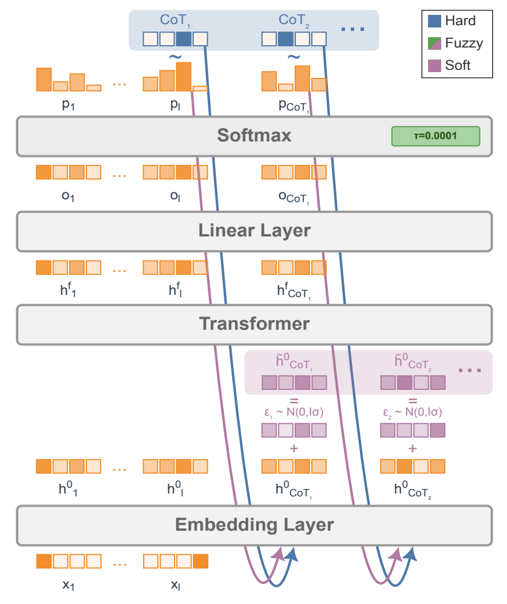
Their method
One approach to obtain continuous tokens from a pre-trained LLMs is by using the final softmax from the previous forward pass. Instead of sampling from the probability distribution to determine the next token (which is subsequently fed into the model as the input in the next forward pass), the probability distribution can be used as weights to make a probability-weighted average of the input embeddings to create a "soft token". On the next forward pass, we can skip the initial embedding layer, and instead pass the soft token straight into the LLM. Works such as Soft Thinking have found that pre-trained models are fairly robust to this sort of interpolation, and are able to obtain good task performance without any additional training.
SOTA reinforcement learning approaches such as GRPO rely on generating several reasoning traces and answers, which are then used to determine advantages which provide the signal used for backpropagation. The challenge with soft tokens is that, because reasoning tokens are now no longer sampled (but rather deterministic interpolations of the input embedding space), there is no diversity across reasoning traces. This greatly limits the exploration that RL fine-tuning methods require. To address this, the authors propose injecting random noise on the input embeddings. This allows different rollouts to have different trajectories, greatly improving the exploration for RL to learn from.
Results
The authors considered chain-of-thought models with the following paradigms:
- For training:
- Hard tokens: the conventional LLM generation approach in which tokens from the vocabulary are sampled.
- Soft tokens: using the output probability distribution to weight the input embeddings (softmax temperature = \(0.5\)).
- Fuzzy tokens: Similar to soft tokens, but with a softmax temperature \(0.0001\), which makes them very close to hard tokens, before adding Gaussian noise.
- For inference:
- Hard Greedy: discrete tokens, CoT temperature \(\tau=0.0\) at test time
- Hard Sample: discrete tokens, CoT temperature \(\tau=1.0\) at test time
- Soft Greedy: Gaussian scale \(0.0\), CoT temperature \(\tau=0.5\) at test time
- Soft Sample: Gaussian scale \(\sigma=0.33 *\) RMSNorm of embeddings, CoT temperature \(\tau=0.5\) at test time
- Fuzzy Greedy: Gaussian scale \(0.0\), CoT temperature \(\tau=0.0001\) at test time
- Fuzzy Sample: Gaussian scale \(\sigma=0.33 *\) RMSNorm of embeddings, CoT temperature \(\tau=0.0001\) at test time
Base models include Llama 3.2 3B Instruct, Llama 3.1 8B Instruct, and Qwen 2.5 3B Instruct, trained on math reasoning datasets GSM8K, MATH and DeepScaleR. Test performance was evaluated on GSM8K, OlympiadBench, and the MATH-500 subset of the MATH test set.
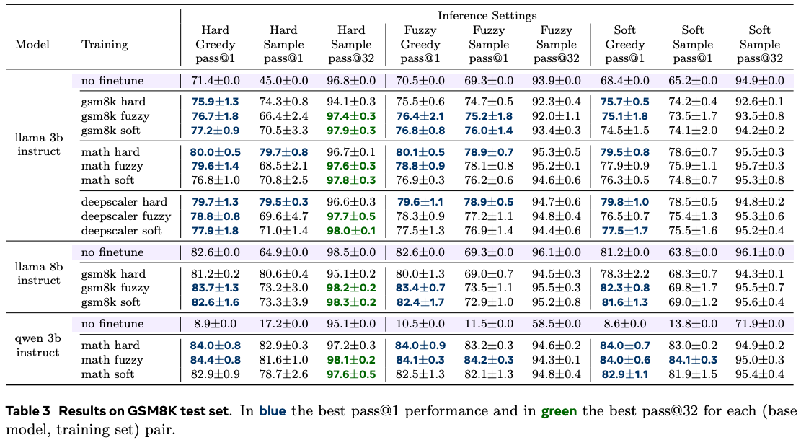
The results found that, across datasets and models, the three training schemes were broadly comparable with evaluating pass@\(1\) performance. However, when considering pass@\(32\) performance, soft and fuzzy training attain a superior performance. They also find that soft and fuzzy training is better when inferring on out-of-distribution data. For inference, the authors found that hard inference attains the best performance in general, regardless of the training scheme.
Conclusion
Soft Tokens, Hard Truths introduces a framework for using SOTA RL algorithms in a continuous thought paradigm. Their results demonstrate the benefits of continuous thoughts during training, however the observation that sampling during inference is better is a somewhat surprising result; we will be keenly watching this space as the community better understands this behaviour, and continues to advance the field of latent reasoning.